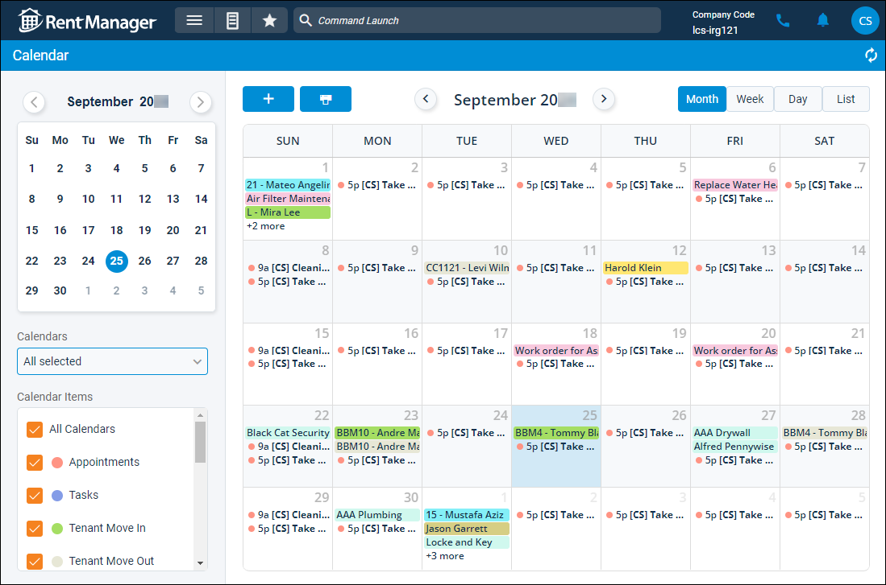

Source: https://rmxhelp.rentmanager.com/Topics/Express/CSH/Calendar.htm
Calendar (Page)
There are many time-sensitive tasks associated with property management. You have daily appointments with prospects, tenants, owners, etc. You need reminders to deposit checks in the bank, or pay monthly bills, or post management fees.
To keep track of these upcoming events, Rent Manager includes an integrated calendar system. The calendar displays important events like upcoming tenant move-ins and move-outs, lease expirations, contract dates, etc. The calendar also lets you enter appointments and tasks so that you never miss an important event!
Related Preferences
To determine how your calendar is viewed when printed, edit the day, week, and month view settings in personal preferences. For more information, refer to Calendar Options (Personal Preferences).
To view the Calendar, go to  arrow_forward Services arrow_forward Calendar arrow_forward Calendar. By default, the calendar displays the current month as well as any events, appointments, or activities scheduled during this time.
arrow_forward Services arrow_forward Calendar arrow_forward Calendar. By default, the calendar displays the current month as well as any events, appointments, or activities scheduled during this time.

Filter Descriptions
The following filters are available on this page.
| Filters | Descriptions |
|---|---|
|
Calendar |
Select the month and year, (and optionally, date) you wish to view from the calendar. The selected month and year display at the top. Use and |
|
Calendars |
Track other user’s calendars by checking or unchecking the available calendars. Another user’s calendar is only available if they’ve selected to share it in personal preferences. For more information, refer to Calendar Options (Personal Preferences). |
|
Calendar Items |
Every item on the calendar is color-coded to allow users to quickly identify the nature of each event. To control which item types are visible on the calendar, check each item type you wish to view on the Calendar or check All Calendars to view all item types. By default, all items are selected. |